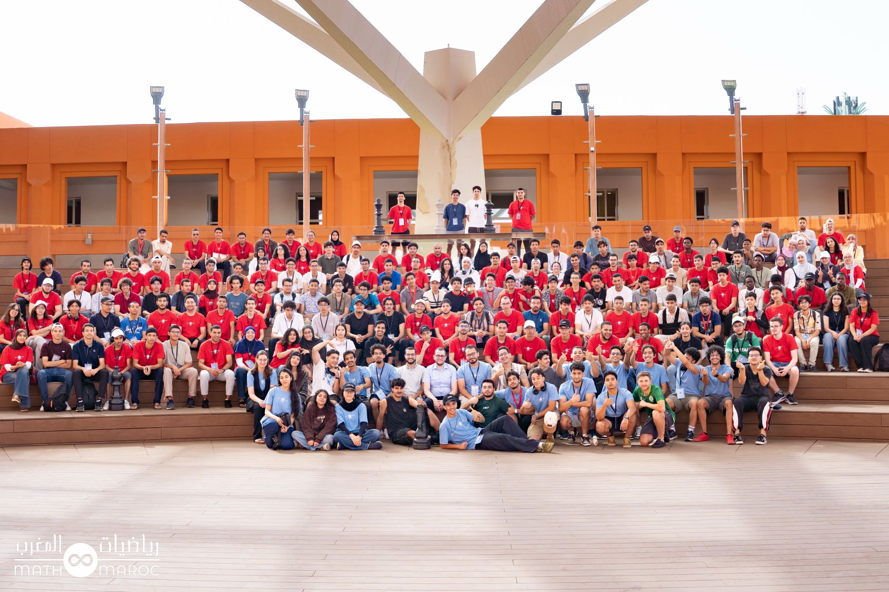

Welcome
I am a first-year engineering student at ENSEEIHT (Toulouse INP), specializing in Electrical Engineering, Energy and Automatic Control (3EA). My path began with the Moroccan scientific preparatory classes (CPGE), where I studied mathematics and physics.
I am interested in programming, electronics, mathematics and automatic control, and I like applying theory to concrete engineering problems. Alongside my studies, I build programming and electronics projects and create LaTeX mathematics resources for CPGE students.
Looking ahead, I want to build my career in electrical energy and control systems, in fields such as aerospace embedded systems or power networks. I am using my first year to explore these paths by talking with engineers, so that I can choose my third-year specialization, an internship or a work-study programme, and possibly a thesis, with a clear goal in mind.
What I work on
-

Programming & Software
C and Python, with a focus on structured problem-solving and clear, working code.
-

Educational Books
I write revision books that are easy to understand, mainly for CPGE students.
-
Control & Embedded Systems
Automatic control and embedded electronics, from my 3EA track and my TIPE on drone attitude stabilization with Arduino and sensors.
Education
-
ENSEEIHT, Toulouse INP
2026 — PresentFirst-year engineering student, specializing in Electrical Engineering, Energy and Automatic Control (3EA).
-
CPGE MPSI, then MP
2024 — 2026Preparatory classes in mathematics and physics, Rabat, Morocco: Lycée Moulay Youssef (MPSI), then Lycée Zahrawi (MP).
-
Baccalauréat, Mathematical Sciences A
2023 — 2024Groupe Scolaire Atlas, Rabat, Morocco. Graduated with the "Très Bien" distinction (18.25/20).
Achievements
-
Academic Results
2024 — 2026Ranked 92nd out of 3,096 in the Concours National Commun (Morocco), 2026. First physics prize at the Groupe Scolaire Atlas open-day contests, 2024.
-
MMC2026 — Mathematics Event, Morocco
2026 · Organized by Maths MarocTook part in MMC2026, a major mathematics event in Morocco organized by Maths Maroc, after passing a selection test.

Get in touch
The quickest way to reach me is by email.